Radar checks an invoice for scam signs before a small business pays it, right inside Westpac Online Banking. Attach the PDF, and in a few seconds Radar says how risky it is, shows what it found and tells you what to do next.
Payments → Make a payment → Attach invoice. Radar checks the invoice, then fills in the payee, BSB, account and amount for you. This is the main story: the check happens before money leaves the account.
Payments → Check an invoice (or the Radar tile on the Overview page). For people not ready to pay yet. If it looks right, Pay this invoice turns it into a payment in one step.
| Level | What the customer sees | When it happens | Main button |
|---|---|---|---|
| LOW | Looks good | Nothing suspicious, e.g. the same account you've paid many times before. Score 80–100. | Continue to pay |
| MEDIUM | Take a quick look | Something is new or changed but not proven bad, e.g. a brand-new supplier. Score 50–79. | Continue to pay (after checking) |
| HIGH | Pause before paying | Serious warning signs: a fake ABN, an account other businesses have reported, or the account name doesn't match. Score under 50. | Report this invoice |
| CRITICAL | Don't pay this invoice | The invoice itself was tampered with: someone edited the bank details in the PDF. | Report this invoice |
The Radar score runs from 0 to 100; higher means fewer warning signs. It is a guide, not a guarantee.
Radar works outwards, cheapest and fastest first, and only digs deeper when something needs a closer look. You see these four steps tick off in the side panel while it runs.
| Step | What it looks at |
|---|---|
| 1 · Quick checks | Has the PDF been edited? Hidden text? Are these the bank details you've paid before? Does the GST add up? Is the ABN valid? |
| 2 · Common red flags | "Our bank details have changed", pressure to pay fast, a free email address, does the ABN belong to this business? |
| 3 · Deeper research | Lookalike email domains, how old the website is, online reviews and scam reports. |
| 4 · Specialist review | Recovering the original bank details from inside an edited PDF. |
If the first two steps are clean and you've paid this account before, Radar stops early ("Not needed"). That's why a normal invoice is quick.
Our customer is Greenline Landscaping, a small landscaping business. All the businesses are fictional.
| Invoice | The story | Result |
|---|---|---|
| Tallowwood · usual | A regular mulch supplier Greenline has paid 14 times, same bank account as always. | LOW 96 |
| Fernhill · new business | A genuine but brand-new irrigation company: ABN 7 weeks old, tiny website. After the owner says "I met them at the expo and ordered this", Radar re-checks and it drops to Low. | MEDIUM 59 → LOW 84 |
| Brightwater · fake | A sloppy fake: invalid ABN, wrong GST, Gmail address, "pay within 24 hours", hidden text in the PDF, an account other businesses have reported. | HIGH 3 |
| Tallowwood · bank changed | The scariest one: the real Tallowwood invoice, with only the bank details swapped by a scammer. Radar spots the edit, finds the original details and the lookalike email address. | CRITICAL 0 |
Invoice: Tallowwood · usual. Shows the everyday case is fast and gets out of the way.
The familiar Westpac Overview page. Radar appears as a notice bar, a tile next to SafeBlock and in the Payments menu. Click Make a payment.
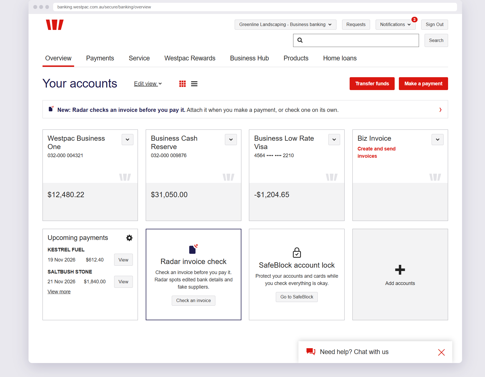
The normal Make a payment form, with one new button: Attach invoice. The Radar panel on the right explains what it will check.
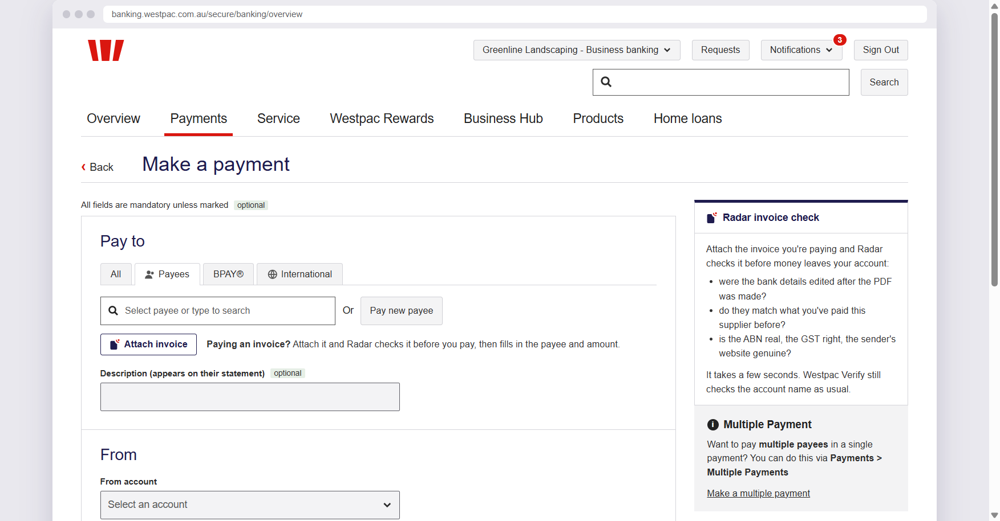
The Radar logo "pings" across the invoice while the four steps tick off. It takes a few seconds.
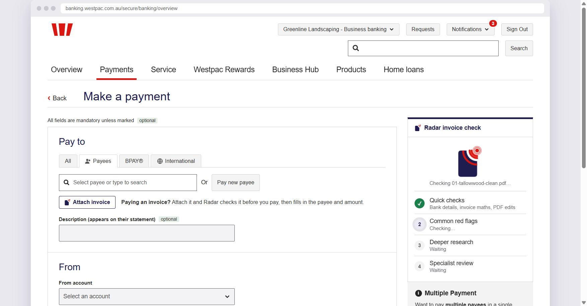
Radar has filled in the BSB, account, name and amount (each marked From invoice). Westpac Verify confirms the account name. The green banner says Low risk · Looks good; deeper research was skipped because they've paid this account 14 times.
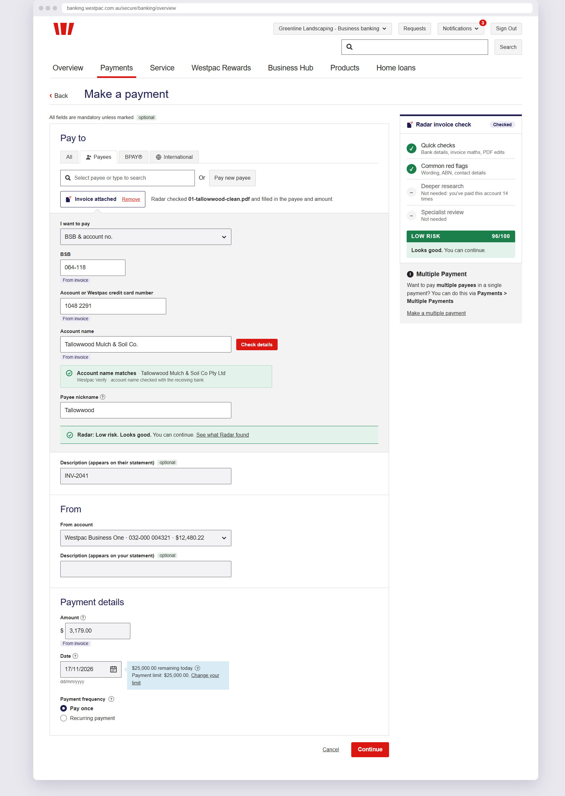
The usual confirmation box, with the Radar result on it.
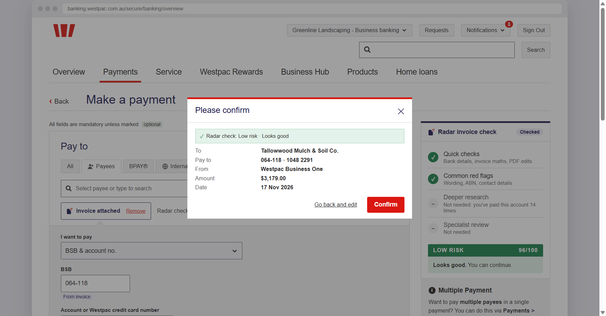
Alongside the payment summary, a Radar receipt records the result and a fingerprint of the exact invoice that was checked, useful if there's a dispute later.
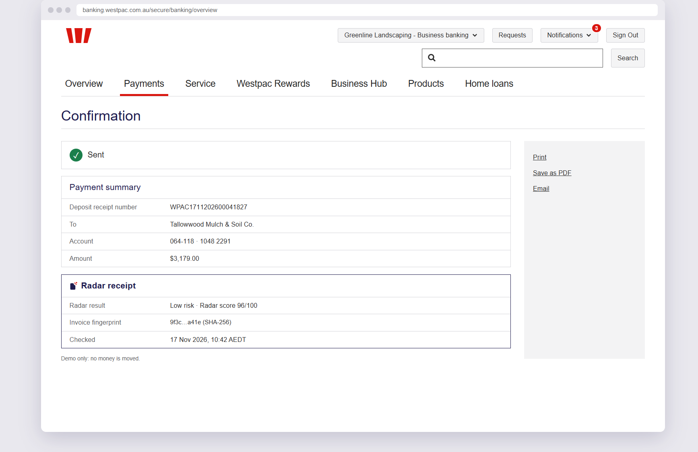
Invoice: Tallowwood · bank changed. The hero moment of the demo: same supplier, same amount, only the bank details changed.
Same steps as before, but now every check lights up red. Westpac Verify says the account is held by someone else, and the Radar banner says Critical risk · Don't pay this invoice. The Continue button becomes Review Radar result.
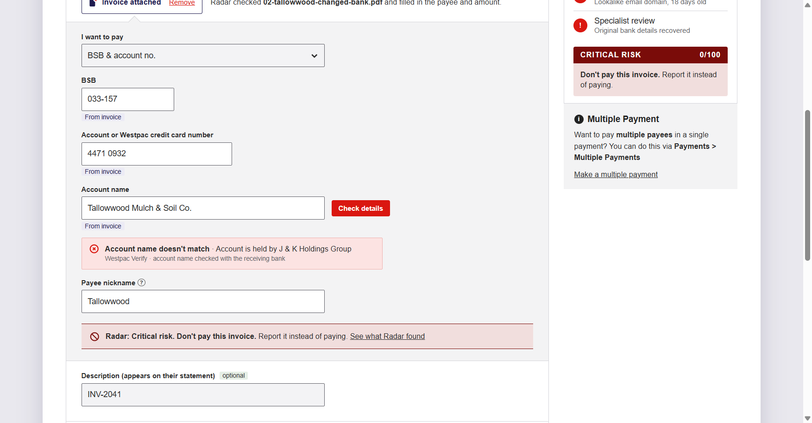
Plain-English findings: the bank details were edited after the invoice was made, Radar recovered the original details (the account they always pay), and the email comes from a lookalike domain set up 18 days ago. "Confirmed" findings can't be explained away. The main button is Report this invoice, with advice to call the supplier on the number from earlier invoices.
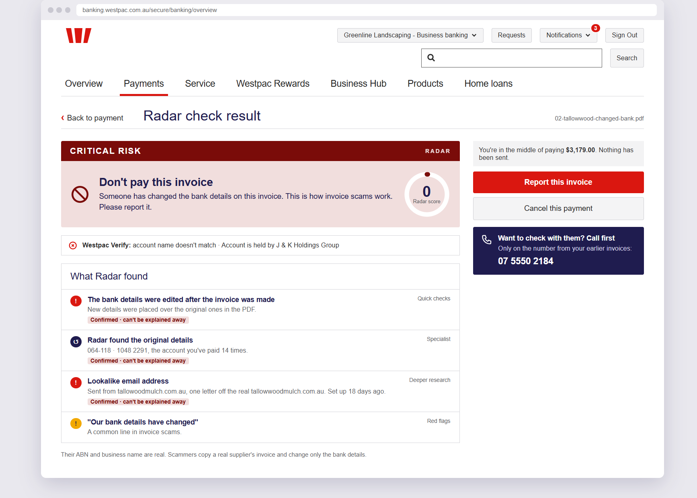
Because they're mid-payment, the page says the payment hasn't been sent and doesn't ask "have you already paid?". The side panel shows what gets sent.
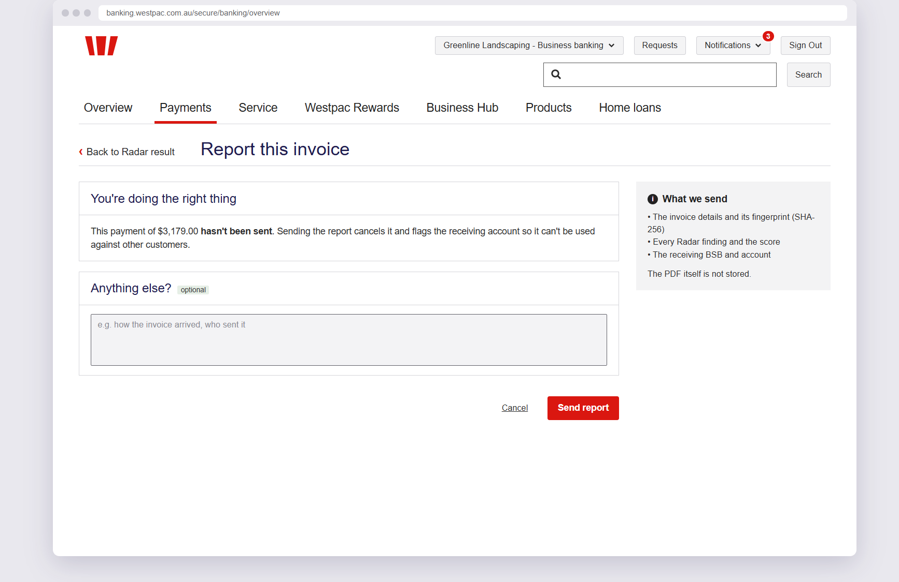
Report received, payment cancelled, no money sent, plus a reminder to warn the supplier, whose email may have been hacked.
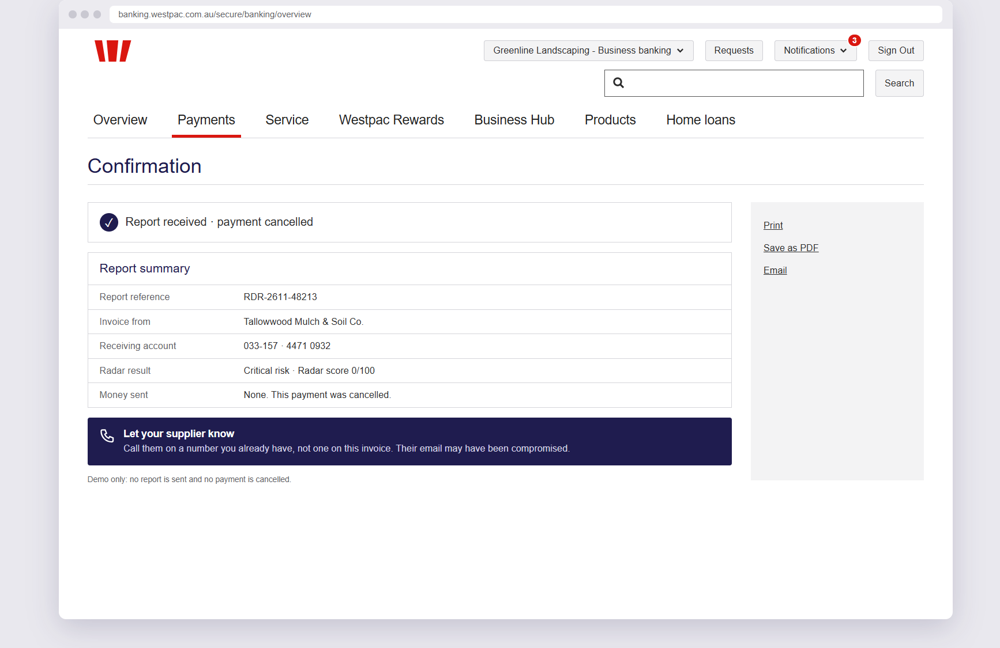
Invoice: Fernhill · new business. Shows Radar isn't just a "scam / not scam" button. New isn't the same as fake, and context matters.
From Payments → Check an invoice. Drop the PDF in. Nothing gets paid.
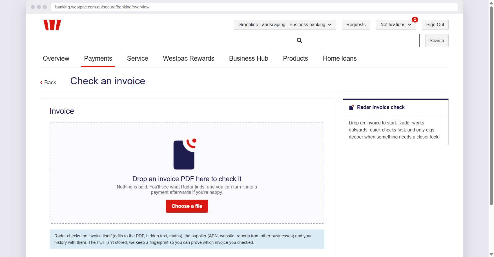
Nothing fake, just new: first payment to them, ABN 7 weeks old, hardly any online presence. Radar asks "How do you know them?"
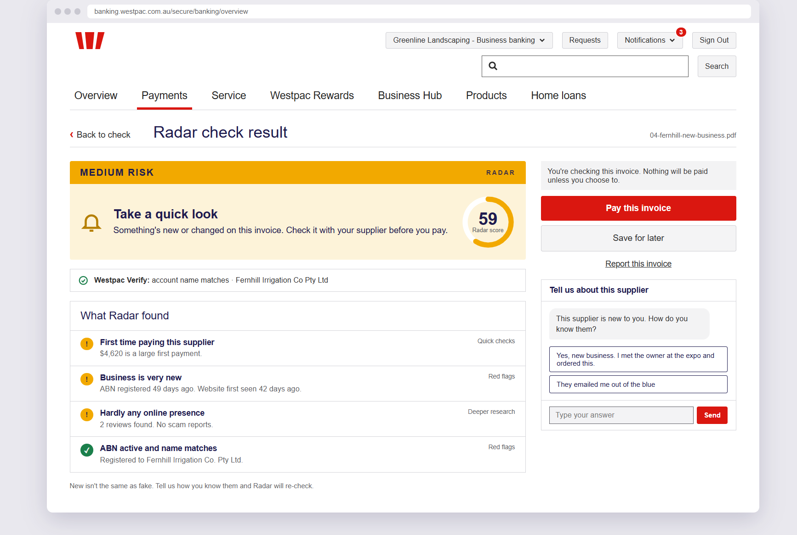
"I met the owner at the expo and ordered this." Radar re-checks: score 59 → 84, Medium → Low. The findings it explained are tagged. Pay this invoice turns it into a payment.
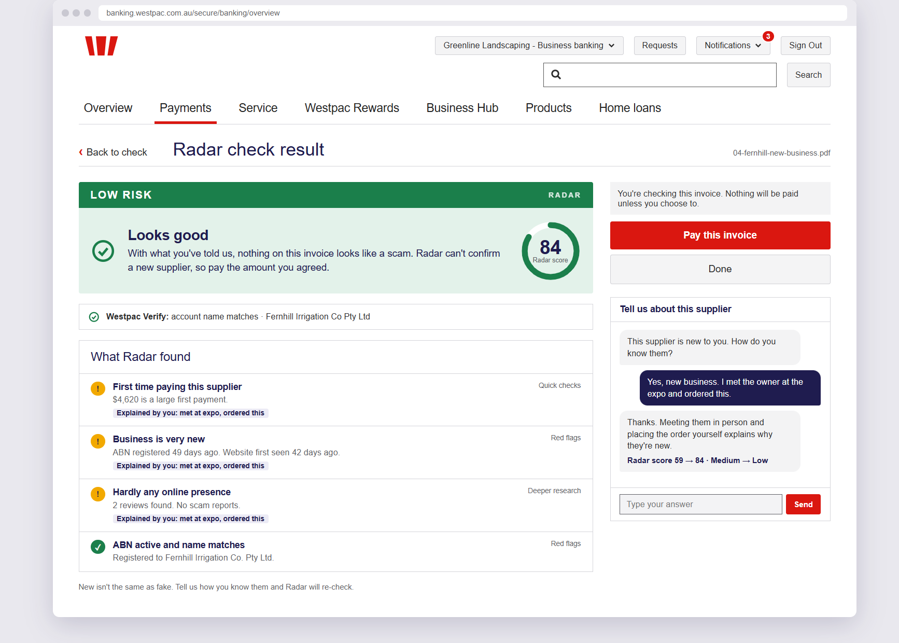
Invoice: Brightwater · fake. Shows Radar catching the many small tells of a sloppy scam.
Reported by two other businesses, an ABN that isn't real, hidden instructions in the PDF, pressure to pay within 24 hours, wrong GST and a Gmail address. Telling Radar "I called the number on the invoice" doesn't help: that number could be the scammer's.
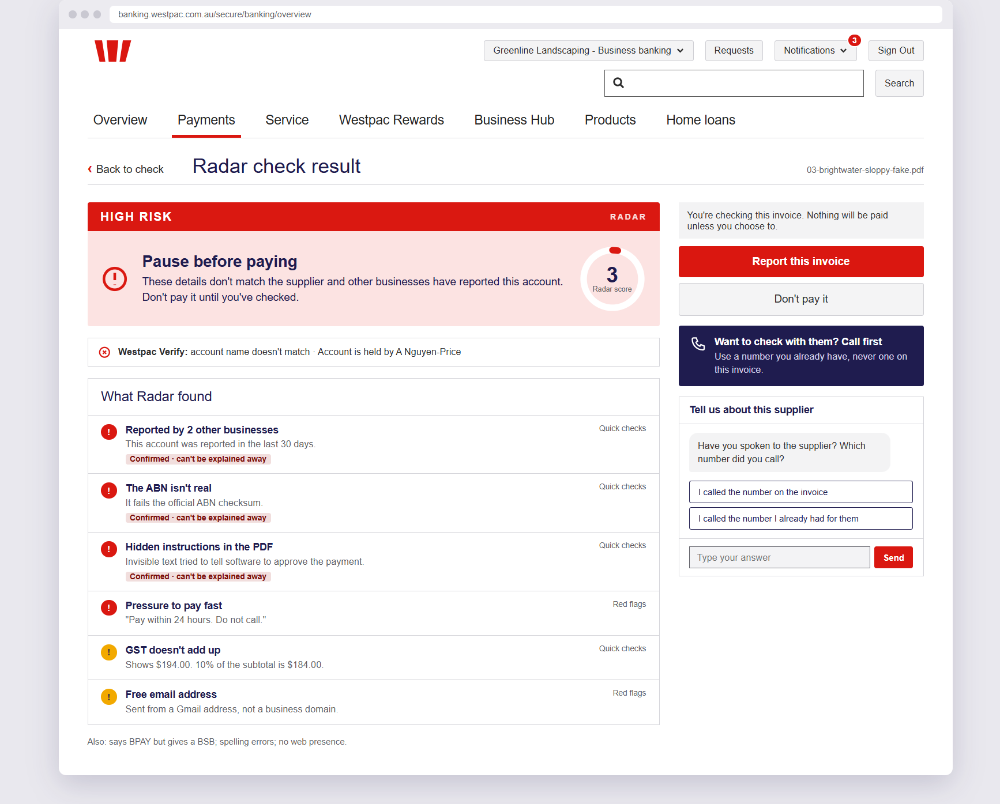
mockup/index.html in Chrome or Edge (double-click it). No internet or install needed.collab/DECISIONS.md in the repo. Brand and level colours: docs/brand-kit.md.